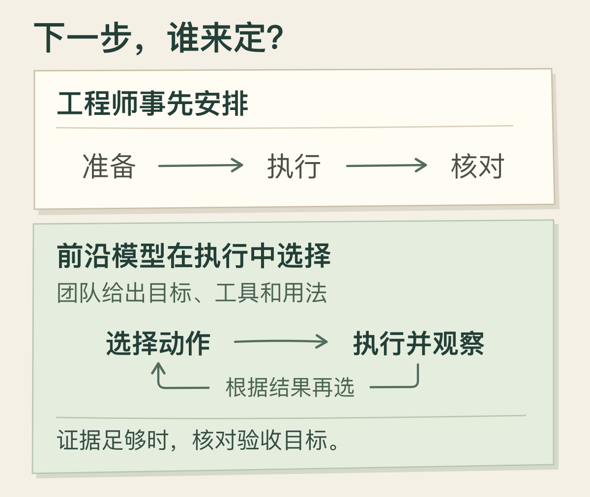

专家经验曾经让我引以为豪
“这个不太行。”
说这句话的时候，我通常是好意。别人想走的那条路，我也走过，摔过不少跟头，自然想替他省点时间。
面对完全陌生的东西，我倒能保持谦虚。麻烦的是那些让我引以为豪的“专业”。别人还没开始讲，我已经准备好点评和指导了。
美妙的工程设计不灵了
今年以来，我们团队一直在做 Agentic Coding 和 Testing。开发和测试各有一套我们觉得很“精妙”的架构。当时，我们很自豪，也很有信心。
可真正跑起来以后，我们花了很多精力修各种 bug，执行效果始终和预期有距离。
最近，随着 Anthropic 发布 Claude Fable 5.2、OpenAI 发布 GPT-6.2 Astra，我们换了一种做法。把目标、工具和使用说明交给这些前沿模型，让模型根据每一步看到的结果，自己决定下一步怎么走。
结果让我们很惊喜。虽然目前还是小样本，已经足以让我们重新审视原来的设计。

这次我们试着把“下一步怎么走”交给模型。
空杯心态和躬身入局
这段经历让我重新思考，在一个发生破坏性创新的时代，那些曾经帮过我的经验，也可能慢慢变成思维的枷锁。
下次再想说“这个不太行”，我想先回到问题本身。用第一性原理想一遍，我究竟要解决什么问题？然后自己上手，拿新技术试一试。

亲手试过，再回头看看自己原先的判断。
技术一直在进步，AI 又让这条曲线往上跳了一截。找到有价值的问题，分析它，解决它，这件事始终没变。
今天，那些曾经让我们引以为豪的设计，都值得重新做一遍。